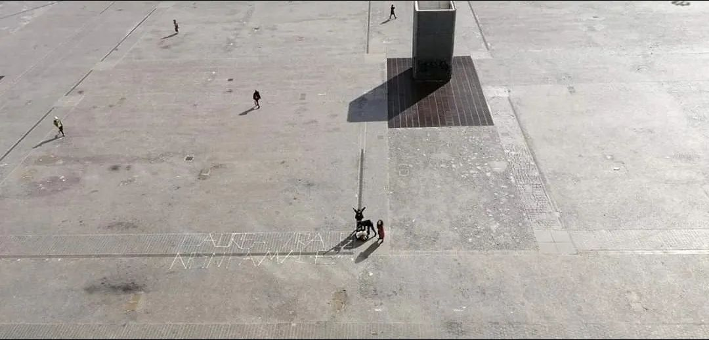

围城内外，一对一的真实与慰藉
原文链接 备份链接 在所有人为物资、床位、治疗，为疫情防控和复工等议题奔忙时，一位艺术家倡导，每个外地人用自己的方式，找到和认识一个武汉朋友。“每天和他聊天，给予对方关怀和慰藉。”“认识一个武汉朋友”计划如星星点灯般，一天之内聚集了上千 …
就像是武汉封城之后，许多网友开始记录自己的生活，这让世界了解了武汉的人们的日常与他们面对疫情的许多情绪。四十日谈也正在创建一个平台，用个体叙事丰满疫情中的叙事，让大家看到真正的意大利“抗疫”生活。

疫情爆发后不见往日摩肩接踵的 Piazza dell’Otto Agosto
第一次感到疫情所带来的情感变化，是周一的下午（3月9号）。
好朋友在家中完成了线上毕业答辩，其他小伙伴在广场给他做了个惊喜，我下了网课也赶去会合。平常熙熙攘攘的广场上, 基本空无一人。广场旁往日热闹的咖啡馆，只剩下几个零星的桌椅在外面，期待着路人的青睐。只有我的小伙伴在那里坐着，三三两两，保持着距离。本该是喜悦的日子，平日里毕业典礼不闹到城里人尽皆知可不愿罢休，可现在，只有我们几个能赶过来的聚在一起，在广场上进行着小庆祝。(上周日的红区划分圈了意大利多个区，本只是去外地过个周末的朋友，这下就被困在了那里)
离开广场，想去吃点饭，走到日常人声鼎沸的Zamboni街区，路上形单影只的人都难寻。只有几家门店还开着，靠近一家，看没有顾客，打探着还在营业，我们六个才进去。
桌子与桌子间已经被拉开了一米距离，老板说，不能合并。于是我们六个人坐在了三张桌子上，以对面和左右两边与他人约一米的距离，开始了”聚餐”。简单的餐后，进来一个牵着狗的女生- 彩发，眼线，鼻钉，工装，马丁靴，一看就是浪迹在Zamboni大街上高度匹配的文学院学生，她被老板告知她之前预定的明日毕业聚会被取消了，原因是老板收到了新政策通知: 18点以后餐馆一律关门。女生失望至极，叹道：“那我跟我的朋友去哪里庆祝?!”
面向我们，相视一笑下更多的是无言的沉默。仅仅一天一夜，病毒的旋风就从北部急速刮到了这里，吹散了人群，也吹走了生活的气息。
原计划一整天的庆祝，没想到新令来的这么突然，我们只好回到家中自备餐酒。
仍是寂寥的大街，多亏卖酒的商店还开着，小伙伴们仍欢呼雀跃，似乎有了这瓶酒，什么忧伤都会烟消云散，有酒有朋友，有爱。
我们几个在家准备，答辩完的小伙伴回自己家先歇着。约好的八点半，九点了还没有到。窗外没有往日的声鸣，我们即使靠近市中心，也似乎住在人世之外，大家真的开始自我隔离了吗? 看来朋友应该困在家中，不知是否要出街了。
就在我也准备着回家，告别也许是疫情前和朋友们最后一次见面的机会，今天的主角来了。他毕竟舍不得我们。
小酌后，大家弹着吉他，打着鼓，哼着歌，默默聆听。这里的世界，既热闹，又寂静。屋内只点着一盏明黄的小灯，光影交错下，只有乐音流动在我们四周，在阴影下，似看不见却又触得着。
快十二点了，我想着要回家了，跟朋友们告别着。虽然白天里大家没有明说，但贴面礼尽可能都省了。而这一刻下，似乎依依的情绪萦绕着我们，我们还是忍不住紧紧拥抱着一一告别。
下楼取了自行车，戴上手套正准备出发，迎面走来一个拿着酒瓶晃悠的街头”流浪者”- Zamboni街区地标性人物, 特征:爱喝酒，扎堆，尤其是晚上。
我下意识地打了声招呼 “Ciao!” (你好)
他晃悠悠的过来问到：“你有餐巾纸吗, 能不能借我一张?”
我说: “有啊，你等下我找找。”
想必他也知道餐馆晚间禁令的事了，我们都有意保持着距离。半米开外，突然，他悲伤的说到：“这个病毒啊，弄得现在街上只剩下我一个人了。”
我什么也没说，给他递了纸后道了句：“Buonasera.” (祝你有个美好的夜晚)
他说过谢谢，继续拎着酒瓶子晃晃悠悠的往前走。
我能说什么，劝他回家吗? 谁知道他有没有家呢，是不是每晚的酒友是他寂寥一日后唯一的相伴者。
我重新戴上手套，紧了紧头上的帽子，登上自行车往家的方向骑去。
但那句“一个人”，今日最悲伤的话语，始终留在了我心里。
- 推荐阅读 -

原文链接 备份链接 在所有人为物资、床位、治疗，为疫情防控和复工等议题奔忙时，一位艺术家倡导，每个外地人用自己的方式，找到和认识一个武汉朋友。“每天和他聊天，给予对方关怀和慰藉。”“认识一个武汉朋友”计划如星星点灯般，一天之内聚集了上千 …
原文链接 备份链接 摘要：本文为“2020，我们的生活在继续”征文大赛的投稿作品。2020年，本来是计划中作为人生转型的一年。疫情一来，一切都变成了问号。 随着不能出门的日子越来越长，我的失业焦虑也愈发严重。 时至今日，已经是我在家中无 …
原文链接 备份链接 距新型冠状肺炎疫情公开已经过去二十多天了，从最初的混乱和恐慌至今，人们似乎在一点点变得平静。生活的节奏被打乱，取而代之的是对 “非正常状态” 的逐渐习惯。对很多参与在捐助行动里的人也是，紧张感从没消失，只是变得可以适 …
原文链接 备份链接 本文由娱志The Review原创出品 华东师范大学传播学院学生娱评号 转载需申请授权 作者 | Moe，苏博 编辑 | 华实 导语 “自2020年1月23日10时起，全市城市公交、地铁、轮渡、长途客运暂停运营；无特殊 …
原文链接 备份链接 3月22日。 封城第60日。难以想象的日子。 昨晚的雨下得还不小，但今天，天色又明亮了起来。无疫情小区逐渐内部开放，今天听到窗外有小孩的笑声，真是久违的声音。外出小区也被允许，只是需要控制时间。去超市购物，也建议错峰。 …